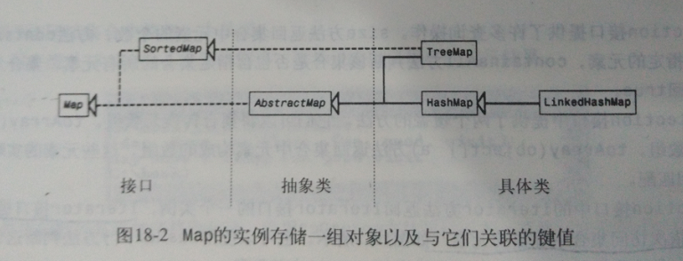

Java学习总结-第十八章 Java集合架构
本文总结源自《Java语言程序设计》原书第五版，作者为Y.daniel Liang，习题及编程练习均参照此书。
主要内容
数组线性表和链表是Java中的预定义结构。除此之外，Java还引入了几种可以有效组织和处理数据的接口和类，这些接口和类组成了Java集合架构（Java Collection Framework）。
一个集合（collection）就是一个存储一组对象的容器，一般将这些对象称为集合的元素（element）。Java集合构架支持三种类型的集合：规则集（set）、线性表（list）和图（map），它们分别定义在接口Set、List与Map中。Set的实例存储一组互不相同的元素，List的实例存储一组顺序排列的元素，Map的实例存储一组对象，每个对象都有一个关联的键值。


Collection接口和AbstractCollection类
- Collection接口是处理对象集合的根接口。它的方法详见API。AbstractCollection类是提供对Collection接口部分实现的便利类。除了size方法和iterator方法之外，它实现了Collection接口中的所有方法。
- Iterator接口提供next（）方法，可以依次访问集合中存储的元素。
Collection接口中有些方法不能在具体子类中实现。这种情况下，这些方法会抛出异常java.lang.UnsupportedOperationException，该异常是RuntimeException异常的一个子类。
规则集Set
- Set接口扩展Collection接口，它没有引入新的方法和常量，只规定它的实例不能包含相同的元素。
- AbstractSet类是一个便利类，它扩展了AbstractCollection类并实现了Set接口。
- Set接口的三个具体类是HashSet、LinkedHashSet和TreeSet。
散列集HashSet
- HashSet类可以用来存储互不相同的任何元素。考虑效率的因素，添加到散列集之中的对象必须实现hashCode方法，适当地散列分布散列码。
- 两个不等的对象可能有相同的散列码。
链式散列集LinkedHashSet
- 在HashSet中元素是没有顺序的，而在LinkedHashSet中，可以按元素插入集合的顺序进行提取。
- LinkedHashSet中的元素存储时保持插入的顺序，要想自定义顺序，可以使用
TreeHashSet。
如果不需要使元素按其插入的顺序进行存储，应该使用HashSet，它的效率要比LinkedHashSet高。
树形集TreeSet
SortSet是Set的一个子接口，它保证规则集中的元素是有序的。TreeSet是实现SortedSet接口的一个具体类。只有当对象之间可以互相比较是，才可以将它们添加到树形集TreeSet中。
- 有两种方法实现对象的比较：
- 使用Comparable接口。如果添加到规则集中的对象是Comparable的实例，就可以使用compareTo方法来比较。这种方法定义的序通常称为
自然顺序（natural order）。参见习题18.7 - 如果该类不支持Comparable接口，或者在实现Comparable接口的类中不想使用compareTo方法进行比较，可以给规则集的元素创建一个比较器。这种方法定义的序称为
比较器顺序（order by comparator）。
- 使用Comparable接口。如果添加到规则集中的对象是Comparable的实例，就可以使用compareTo方法来比较。这种方法定义的序通常称为
- 创建树形集的好的方法是使用构造方法
TreeSet(Collection c)，这样只需要对规则集进行一次排序，效率较高。
**如果向树形集添加一个与集合中已有元素不可比的对象，将会发生运行错误ClassCastException。
比较器接口Comparator
- 有时想把不同类型的元素添加到同一个树形集内，可以定义一个比较器来比较这些元素。可以创建一个
java.util.Comparator接口的类。其方法如下：- public int compare(Object element1,Object element2)
- public boolean equals(Object element)
**Object类也定义了equals方法，因此实现接口时不实现equals方法也不会报错，但是实现该方法可以快速的判断，提高效率。
- 树形集要想使用一个比较器，必须使用构造方法TreeSet（Comparator comparator）来创建一个有序集。
线性表List
线性表允许在一个集合中存储重复的元素。
- List接口扩展Collection接口，添加了
面向位置（position-oriented）的操作，并且添加了能够双向遍历线性表的新迭代探子。（ListIterator）
数组线性表ArrayList和链表LinkedList
- 如果需要使用下标随机访问元素，并且处理在末尾之外，不在其他位置插入或删除元素，使用ArrayList。
- 如果需要在线性表的任意位置上插入或删除元素，应该选择LinkedList。
- 如不要求在线性表中插入或删除元素，数组是效率最高的数据结构。
向量类Vector
- Vector类除了包含用于访问和修改向量的同步方法外，它与ArrayList是相同的。同步方法用于防止两个或多个线程同时访问向量时引起数据冲突。
- 当不需要同步时，最好使用ArrayList，它比Vector快得多。
栈类stack
栈类stack是最为Vector类的扩展实现的。
一般类型的使用
- 所有的集合都支持一般类型，可以用记号
<>给任一集合中的元素指定一个特定的类型。 - 从一个只有一种指定元素类型的集合中取值时，不需要进行类型转换。
图Map
- Map接口建立元素和键值的一个映射关系。键值就是下标。
- 一个图中不能有重复的键值，每个键值对应一个值。
- AbstractMap类是一个实现Map接口的便利类，除了entrySet()方法外，它实现了Map接口中的其他方法。SortedMap接口扩展Map接口，其中的映像是以键值升序的方式排列的。
- 散列图HashMap、链式散列图LinkedHashMap和树形图TreeMap三种类是实现Map接口的具体类。
HashMap
对于定位查找一个值、插入一个映像或删除一个映像，HashMap的效率是很高的。
LinkedHashMap
- 它支持图中元素排序。在LinkedHashMap中，元素既可以按照它们插入的顺序排序（称为
插入排序（insertion order）），也可以按它们最后一次访问时间的顺序，从最早到最晚（称为访问顺序（access order））。- 无参构造方法是以插入顺序创建LinkedHashMap对象的。
- 使用构造方法LinkedHashMap（initialCapacity，loadFactor，true）可以以访问顺序创建LinkedHashMap对象。
TreeMap
- 它实现了SortedMap接口，它可以按照键值排好的顺序遍历图。键值可以使用Comparable接口或Comparator接口来排序。
- 构造方法：
- TreeMap（）如果实现了Comparable接口，就可以使用compareTo方法来对集合内中的元素进行排序。
- TreeMap（Comparator comparator）可以使用指定比较器来对图中元素进行排序。
Map接口不含有迭代探子，为遍历一个图，可以用Map接口的方法enrtySet()来创建一个映像的规则集。该规则集内的每个元素都是一个字符串，它是由代表键值对象的字符串与其对应的映像用等号连接而成的。
Collections类
Collections类包含管理集合与图、创建同步集合类、创建只读集合类等静态方法。
Arrays类
Arrays类中包含对数组进行排序、查找、比较和填充元素的各种静态方法。它还包含了将数组转为线性表的方法。
复习小结
- Java集合架构中的所有具体类都实现了Cloneable和Serializable接口，所以它们的实例都是可复制和可复制的。
- Collections类和Arrays类提供的方法都是静态方法。
编程练习
- 习题18.1 18.2 18.3 18.5 18.6 18.7 18.9源代码见我的Github： chapter18
18.5按字典升序显示单词的实现思路：使用线性表存储每个单词，使用构造方法sort（Comparator comparator）对表中的对象排序，比较器的实现如下：
12345678910111213141516class DicComparable implements Comparator {public int compare(Object o1, Object o2) {String s1 = ((String) (o1)).toLowerCase();String s2 = ((String) (o2)).toLowerCase();if (s1.compareTo(s2) > 0) {return 1;} else if (s1.compareTo(s2) < 0) {return -1;} else {return 0;}}}18.7将单词按出现频率升序显示，实现思路：创建一个实现Comparable接口的类Wordoccurrence,该类包含两个域word和count，使用compareTo方法来比较单词的出现次数。
123456789101112131415161718192021class WordOccurrence implements Comparable {String word;int count;public WordOccurrence(String word, int count) {this.word = word;this.count = count;}public int compareTo(Object o) {if (count > ((WordOccurrence) o).count) {return 1;} else if (count < ((WordOccurrence) o).count) {return -1;} else {return 0;}}}